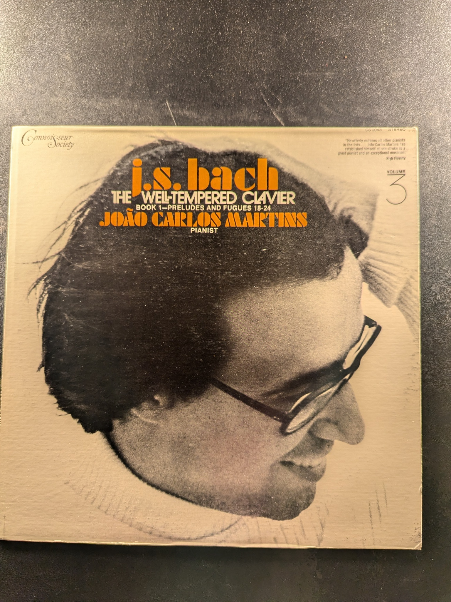

Flaming Flamenco Guitar
Sabicas
Musical Heritage Society MHS 3282
Artistry in Flamenco
Sabicas
ABC Records ABCS-614
Flamenco Songs with Passion and Imagination
Juan Serrano
RCA Victor LPM-3644
Ayres and Lute Lessons
John Dowland
Saga
The Persian Santur: Music of Iran
Various Artists
Nonesuch H-72039
Snowflake Breakdown
Randy Zombola
The Well-Tempered Clavier, Book 1 - Preludes and Fugues 18-24
João Carlos Martins
Connoisseur Society CS 2049
The Goldberg Variations
Glenn Gould
Columbia Masterworks MS 6538
Beethoven 'Pastoral' Symphony
Reiner / Chicago Symphony
RCA Victor Red Seal LSC-2614
English Virginal Music
Colin Tilney
Argo
Goldberg Variations
Johann Sebastian Bach
The Musical Heritage Society Inc. MHS 790
The Partitas for Harpsichord No. 5 in G, No. 6 in E minor
Igor Kipnis
Angel S-36059
The Harmonious Blacksmith
Igor Kipnis
Columbia Masterworks MS 7283
Bach on the Harpsichord and Clavichord
Igor Kipnis
Columbia Masterworks M 30271
Harfe
Nicanor Zabaleta
Deutsche Grammophon 139 304

Symphony No. 5 Op. 50
Carl Nielsen, Leonard Bernstein, New York Philharmonic
Columbia Masterworks MS 6141
John Williams Plays Bach: The Complete Lute Music on Guitar
John Williams
Columbia Masterworks M2 32510
The Art of the Fugue
Bach/Glenn Gould
Columbia MS 6538
Handel: Suites for Harpsichord Nos. 1-4
Glenn Gould
Columbia Masterworks M 31512
John Williams and Friends
John Williams
Columbia M 35108
More Virtuoso Music for Guitar
John Williams
Columbia S 30579
Music for Guitar and Harpsichord
John Williams, Rafael Puyana
Columbia Masterworks M 31134
Echoes of London
John Williams
CBS 42119
The Guitar Artistry of John Williams
John Williams
Everest 3219
The Virtuoso Guitar
John Williams
Everest 3195
{kind=link}
{kind=link}
{kind=link}
{kind=link}
{kind=link}
{kind=link}
{kind=link}
{kind=link}
{kind=link}
{kind=link}
{kind=link}
{kind=link}
{kind=link}
{kind=link}
{kind=link}
{kind=link}
{kind=link}
{kind=link}
{kind=link}
{kind=link}
{kind=link}
{kind=link}
{kind=link}
{kind=link}